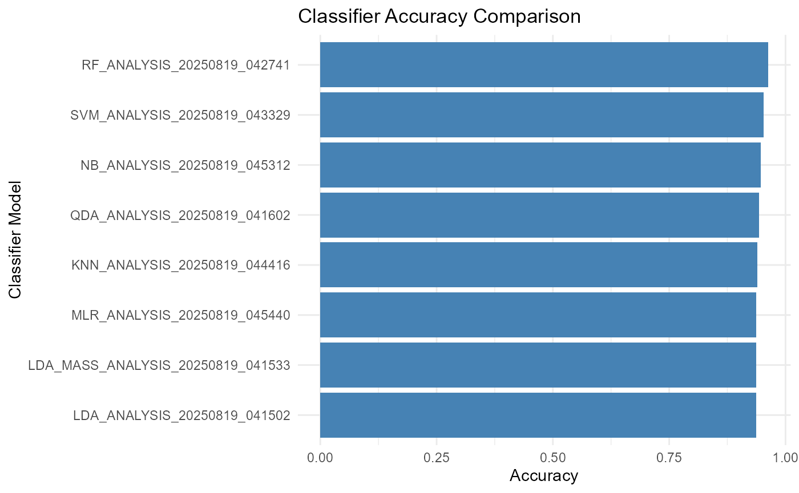
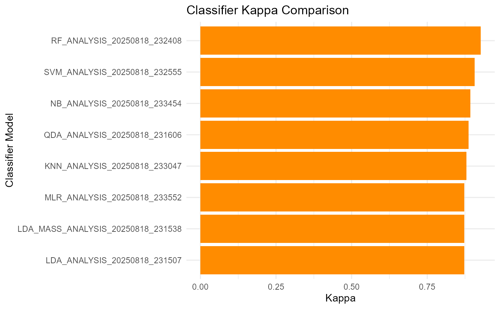

Comparing built-in classification methods in RHISEA for mixed-stock analysis
Sosthene Akia
Fisheries and Oceans Canadasosthene.akia@dfo-mpo.ca
Alex Hanke
Fisheries and Oceans Canadaalex.hanke@dfo-mpo.ca
2025-08-18
Source:vignettes/Multiple_Classifiers.Rmd
Multiple_Classifiers.RmdIntroduction
This vignette demonstrates how to perform a comprehensive comparison of multiple classification models for mixed-stock analysis using the RHISEA package.
RHISEA extends the classical HISEA mixed-stock analysis framework by allowing users to incorporate a variety of modern classifiers and evaluate their performance on the same dataset.
By running the provided automated classifier comparison script, you will be able to:
- Train and validate a diverse set of classifiers on your baseline data,
- Apply these classifiers to mixture data,
- Obtain classical HISEA stock proportion estimates for each classifier,
- Automatically save and log results,
- Summarize and visualize performance metrics such as accuracy and kappa,
- Compare classifier performances both quantitatively and visually.
Setup and Required Libraries
library(RHISEA)
library(RHISEA)
library(writexl)
library(mclust)
library(ggplot2)
# --- 0. Install and load required libraries ---
required_pkgs <- c(
"dplyr", "ggplot2", "purrr", "mclust", "RHISEA",
"MASS", # for LDA/QDA
"randomForest", # for Random Forest
"xgboost", # for XGBoost
"e1071", # for SVM and Naive Bayes
"class", # for k-NN
"klaR", # for additional NB methods
"partykit", # for CTree
"nnet", # for multinom and ANN
"caret" # for cross-validation utilities
)
to_install <- setdiff(required_pkgs, rownames(installed.packages()))
if (length(to_install)) install.packages(to_install)
suppressPackageStartupMessages({
library(dplyr)
library(ggplot2)
library(purrr)
library(mclust)
library(RHISEA)
library(MASS)
library(randomForest)
library(xgboost)
library(e1071)
library(class)
library(klaR)
library(partykit)
library(nnet)
library(caret)
})Load Baseline and Mixture Data
# Load baseline and mixture data
baseline_file <- system.file("extdata", "baseline.rda", package = "RHISEA")
mixture_file <- system.file("extdata", "mixture.rda", package = "RHISEA")
load(baseline_file) # loads `baseline` data.frame
load(mixture_file) # loads `mixture` data.frameThe baseline dataset contains known stock samples
labeled by population. The mixture dataset contains
unknown-origin samples to be assigned to stocks.
Define Analysis Parameters and Output Setup
np <- 2 # Number of populations/stocks
nv <- 2 # Number of variables used (e.g., isotopes)
Nsamps <- 1000 # Number of bootstrap samples for estimation
Nmix <- 100 # Number of mixture samples
stock_labels <- c("East", "West")
resampled_baseline_sizes <- c(50, 50)
resample_baseline <- TRUE
baseline$population <- as.factor(baseline$population)
stocks_names <- levels(baseline$population)
np <- length(stocks_names)
output_directory <- "model_comparison"
log_file <- file.path(output_directory, "comparison_log.txt")
if (!dir.exists(output_directory)) dir.create(output_directory)
cat(sprintf("[%s] Starting classifier comparison\n", Sys.time()),
file = log_file, append = TRUE)Supported Classifiers to Evaluate
The script supports the following classifiers, all integrated in
RHISEA’s run_hisea_all() wrapper:
- Linear Discriminant Analysis (LDA)
- Linear Discriminant Analysis via MASS package (LDA_MASS)
- Quadratic Discriminant Analysis (QDA)
- Random Forest (RF)
- Extreme Gradient Boosting (XGB)
- Support Vector Machine (SVM)
- k-Nearest Neighbors (KNN)
- Artificial Neural Network (ANN)
- Naive Bayes (NB)
- Model-based Clustering (MCLUST)
- Multinomial Logistic Regression (MLR)
Run Automated Classifier Comparison
# --- 3. Supported classifiers in run_hisea_all() ---
models_to_run <- c(
"LDA", # custom LDF
"LDA_MASS", # MASS::lda
"QDA", # MASS::qda
"RF", # randomForest
# "XGB", # xgboost::xgb.DMatrix
"SVM", # e1071::svm
"KNN", # class::knn
"ANN", # nnet::nnet
"NB", # e1071::naiveBayes
# "MCLUST", # mclust::MclustDA
"MLR" # nnet::multinom
)
all_results <- list()
# --- 4. Helper: extract performance metrics safely ---
extract_metrics <- function(res) {
if (is.null(res) || inherits(res, "error")) return(NULL)
cv_res <- res$baseline_classification_quality$cv_results
if (!is.null(cv_res)) {
return(data.frame(
Accuracy = mean(cv_res$Accuracy, na.rm = TRUE),
Kappa = mean(cv_res$Kappa, na.rm = TRUE),
F1_Score = if ("Mean_F1" %in% names(cv_res)) {
mean(cv_res$Mean_F1, na.rm = TRUE)
} else NA_real_
))
}
qual <- res$baseline_classification_quality
if (!is.null(qual)) {
f1_vals <- qual$f1_by_class
return(data.frame(
Accuracy = qual$accuracy,
Kappa = qual$kappa,
F1_Score = if (is.numeric(f1_vals)) mean(f1_vals, na.rm = TRUE) else NA_real_
))
}
NULL
}
# --- 5. Loop over classifiers ---
message("Launching comparative analysis for ", length(models_to_run), " classifiers...\n")
for (i in seq_along(models_to_run)) {
model <- models_to_run[i]
message("-> Running model: ", model)
# Create subdirectory for this model
model_dir <- file.path(output_directory, model)
if (!dir.exists(model_dir)) dir.create(model_dir)
# Run the HISEA analysis
result <- tryCatch(
run_hisea_all(
type = "ANALYSIS",
np = np,
nv = nv,
resample_baseline = resample_baseline,
resampled_baseline_sizes= resampled_baseline_sizes,
seed_val = 123456,
nsamps = Nsamps,
Nmix = Nmix,
baseline_input = baseline,
mix_input = mixture,
method_class = model,
stocks_names = stock_labels,
stock_col = "population",
var_cols_std = c("d13c", "d18o"),
var_cols_mix = c("d13c_ukn" ,"d18o_ukn"),
export_csv = TRUE,
output_dir = model_dir,
verbose = FALSE,
phi_method = c("standard", "cv")[2]
),
error = function(e) {
msg <- sprintf("[%s] ERROR in %s: %s\n", Sys.time(), model, e$message)
cat(msg, file = log_file, append = TRUE)
message(" ✖ Error occurred; logged.")
structure(list(error = e), class = "error")
}
)
all_results[[model]] <- result
}This loop runs each classifier, performs the mixed-stock analysis using RHISEA’s HISEA estimators, saves results in separate subfolders, and logs errors if any occur.
Summarize and Visualize Classifier Performance
# Load saved .rda result files from all models
rda_files <- list.files(output_directory, pattern = "result_.*\\.rda$", recursive = TRUE, full.names = TRUE)
extract_metrics_from_rda <- function(rda_path) {
load(rda_path) # loads 'out'
model_name <- gsub(".*result_(.*)\\.rda$", "\\1", rda_path)
if (!is.null(out$baseline_classification_quality)) {
acc <- out$baseline_classification_quality$accuracy
kappa <- out$baseline_classification_quality$kappa
return(data.frame(Model = model_name, Accuracy = round(acc, 3), Kappa = round(kappa, 3)))
}
return(NULL)
}
performance_summary <- purrr::map_dfr(rda_files, extract_metrics_from_rda)
print(performance_summary)## Model Accuracy Kappa
## 1 KNN_ANALYSIS_20250818_233047 0.940 0.880
## 2 LDA_ANALYSIS_20250818_231507 0.937 0.873
## 3 LDA_MASS_ANALYSIS_20250818_231538 0.937 0.873
## 4 MLR_ANALYSIS_20250818_233552 0.937 0.873
## 5 NB_ANALYSIS_20250818_233454 0.947 0.893
## 6 QDA_ANALYSIS_20250818_231606 0.943 0.887
## 7 RF_ANALYSIS_20250818_232408 0.963 0.927
## 8 SVM_ANALYSIS_20250818_232555 0.953 0.907Plot Accuracy and Kappa for Each Model
library(ggplot2)
ggplot(performance_summary, aes(x = reorder(Model, Accuracy), y = Accuracy)) +
geom_col(fill = "steelblue") +
coord_flip() +
labs(title = "Classifier Accuracy Comparison",
x = "Classifier Model", y = "Accuracy") +
theme_minimal()
ggplot(performance_summary, aes(x = reorder(Model, Kappa), y = Kappa)) +
geom_col(fill = "darkorange") +
coord_flip() +
labs(title = "Classifier Kappa Comparison",
x = "Classifier Model", y = "Kappa") +
theme_minimal()
Conclusion
This approach provides a powerful way to evaluate and compare multiple classification methods for mixed-stock analysis, enabling you to select the most accurate and reliable model for your specific dataset.
The RHISEA package’s integration of modern classifiers with classical HISEA estimation provides both flexibility and statistical rigor, empowering fisheries and ecological researchers to improve stock composition estimates.